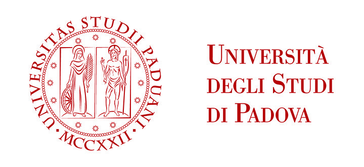
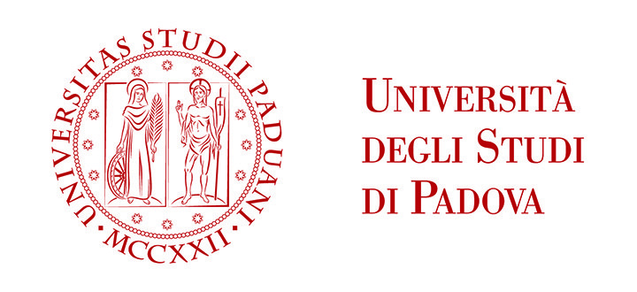

ScambioLibriVI è un progetto di Francesca, Luca e Marco, tre studenti di Informatica dell'Univeristà degli Studi di Padova uniti dalla passione per i libri.
L'idea nasce dalla nostra esperienza universitaria: la pratica di scambiare libri a mano, sebbene molto diffusa, non è supportata da piattaforme specializzate che mettano in contatto i vari utenti; vendere e comprare libri è dunque un processo lungo e complesso, spesso affidato al passaparola, ai volantini e alla fortuna.
Estendendo il concetto ad ogni genere di libro, abbiamo deciso di creare una piattaforma di semplice utilizzo che metta in contatto direttamente i venditori e gli acquirenti, che potranno stabilire autonomamente le modalità di scambio senza passare attraverso intermediari.
 
